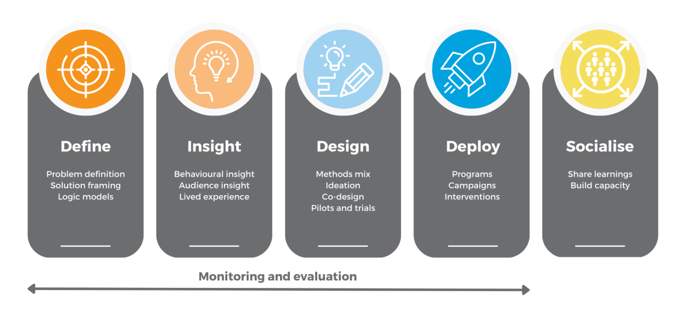

The Behaviour Change Collaborative is a social enterprise working collaboratively to address health, social and environmental challenges.
BETTER HEALTH FOR ALL
We’ve been delivering successful social marketing, behaviour change communication and health promotion programs for more than a decade. Recently, we’ve helped to improve childhood literacy in South Africa and Jordan, and tackled high suicide rates in WA’s Goldfields. We’re currently working with government and NGO’s to address teen vaping, maternal health , alcohol and drug related harm and to improve service access for disadvantaged health consumers.
ENHANCING SOCIAL COHESION
We’ve quickly established a reputation as a trusted advisor to government and NGO’s on some of the world’s most pressing social issues. We generate and interpret audience and behavioural insight to inform policy, strategy and campaigns. We’re currently working on projects to reduce gender inequality, family and domestic violence, racism, and to enhance community cohesion. We’re particularly adept at meaningfully engaging with disadvantaged and hard to reach groups.
A MORE SUSTAINABLE FUTURE
From encouraging sustainable behaviours in West Australian homes and workplaces, to a Farmer Managed Natural Regeneration Social and Behaviour Change Communication (SBCC) Strategy for Zambia – we deliver behaviourally informed projects that contribute to a sustainable future for all. We’re voluntarily supporting organisations like Plastic Ocean’s Australasia and Perth NRM’s ReWild Perth to address a range of environmental challenges.
Our Approach
The Behaviour Change Collaborative adopts a holistic, multi-disciplinary approach to addressing behavioural challenges. The model below provides an overview of the process we use to plan behaviour change programs. We help organisations define clear behavioural goals, generate actionable insight, design and test solutions, and build capacity. We partner with organisations throughout the entire process, but regularly provide support for specific aspects along their journey.

Core disciplines
Social Marketing
We apply proven behavioural marketing techniques to address health, social and environmental challenges. Best practice social marketing integrates research, theory, and consumer insight to inform the delivery of change programs. Social marketing provides government and civil society with a suite of theories, tactics, and methods which can be used to influence behaviours for good.
Behavioural Research
We specialise in behaviour change research and the evaluation of change programs. We use a mix of traditional and innovative research methods to generate actionable insights which can be used to inform policy and program design.
Communications and Advocacy
We help clients to develop and deploy effective, insight-driven communications that deliver measurable attitudinal and behavioural change amongst target audiences. We have an extensive track record delivering successful behaviour change communications and marketing. We can assist with insight generation, behavioural targeting, message testing, deployment and evaluation.
Community and Stakeholder Engagement
The BCC engages individuals and communicates to ensure policy and programs are meaningfully informed by lived experience. Change programs are more likely to succeed if behavioural insights and the opinions of experts are combined with an understanding of what moves and motivates individuals and communities. We work collaboratively to build continuous engagement strategies that empower citizens. We build two-way processes that enable people to co-define problems and then help to shape solutions through policy and programs.
Behavioural Science
We leverage our extensive network of subject matter experts, academic and industry partners to apply behavioural science to pressing social challenges. We look to use behavioural science in the real world, not the lab, and often use our knowledge of the behavioural and social sciences to augment other approaches to influencing behaviour.
Design Thinking
The BCC draws on the principles of behavioural design to influence human behaviours. We also use methods like human-centred and co-design to develop new, and improve existing, programs and services. We use multidisciplinary approaches that provide new and unique perspectives on how to drive meaningful change.